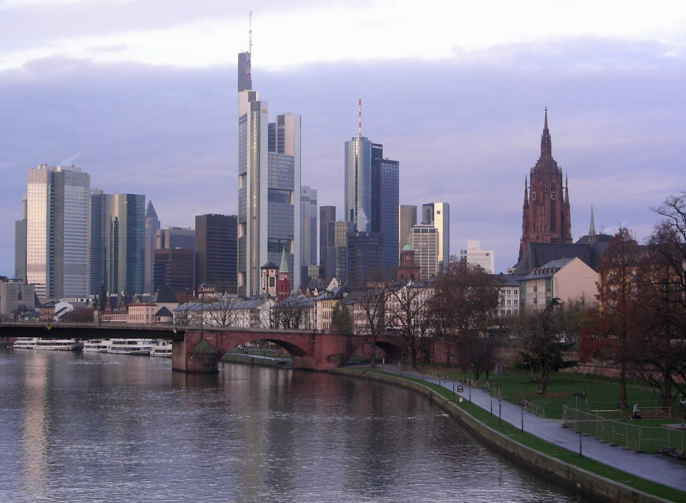

Piazza Affari e indici europei del 25 agosto 2026
| Indice | Chiusura | Variazione | Note |
|---|---|---|---|
| FTSE MIB (Italia) | 52.884 pt | +0,65% | Banche leader, contesto macro favorevole |
| DAX (Germania) | — | +0,44% | Supportato dall'Ifo migliore delle attese |
| CAC 40 (Francia) | — | +0,41% | Rialzo moderato in linea con l'Europa |
| FTSE 100 (UK) | — | +0,21% | Rialzo più contenuto, sterlina forte penalizza |
| Spread BTP/Bund | 81,96 bp | Sotto 82 | Minimo di periodo; BTP 10 anni al 4,0% |
| Euro/Dollaro (EUR/USD) | 1,1663 | — | Euro stabile sopra 1,16 sul cambio con il dollaro |
Piazza Affari sovraperforma (rende più) rispetto agli altri mercati europei, confermando la forza del settore bancario italiano che continua a beneficiare del tema del consolidamento. Il DAX tedesco mette a segno un discreto +0,44%, sostenuto proprio dall'Ifo di agosto superiore alle attese, mentre il CAC 40 parigino guadagna un più contenuto +0,41%. L'indice britannico FTSE 100 avanza di un modesto +0,21%, frenato dall'apprezzamento della sterlina che penalizza le aziende esportatrici a larga capitalizzazione.
Il Risiko Bancario (consolidamento bancario): MPS, Banco BPM e Banca Generali in rally
Il vero motore della seduta di martedì 25 agosto è il settore bancario, con quattro titoli in netto rialzo per effetto del cosiddetto Risiko Bancario (consolidamento del settore bancario italiano). Il termine, mutuato dal celebre gioco di strategia, descrive il complesso intreccio di trattative, offerte pubbliche e acquisizioni che stanno ridisegnando la mappa del credito italiano. Al centro dell'attenzione degli investitori, nella giornata, è il dossier relativo a una possibile operazione che coinvolge Monte dei Paschi di Siena (MPS) e Banca Generali.
Banca Generali registra la performance migliore tra le banche in listino con +1,4%: il titolo della società di gestione patrimoniale — controllata da Assicurazioni Generali — è al centro di voci di mercato che la vorrebbero come potenziale bersaglio di un'OPS (Offerta Pubblica di Scambio) da parte di MPS, nell'ambito di un'operazione di riassetto del settore. Il mercato prezza (valuta nel prezzo del titolo) la probabilità crescente di un'operazione straordinaria, spingendo il titolo al rialzo.
Intesa Sanpaolo avanza del +1,2%, anche qui con gli investitori che leggono il consolidamento del settore come un fattore positivo per i grandi istituti: in un mercato che si concentra, le banche maggiori vedono crescere il proprio Pricing Power (potere di determinazione dei prezzi) e ridurre la pressione competitiva. MPS e Banco BPM guadagnano entrambe il +1,0%: Monte dei Paschi come presunto protagonista attivo dell'operazione, Banco BPM come potenziale tassello di un più ampio rebus del credito italiano.
Il comparto bancario italiano rappresenta ormai una quota rilevante del FTSE MIB — il suo peso nell'indice supera il 30% — e le sue performance hanno un impatto diretto sull'andamento complessivo di Piazza Affari. Una seduta in cui le banche salgono mediamente dell'1-1,4% trascina con sé l'intero listino, come dimostra il +0,65% dell'indice principale.
💡 Impara: Risiko Bancario (Consolidamento del Settore Bancario)
Con l'espressione Risiko Bancario (consolidamento del settore bancario) si indica il processo di fusioni, acquisizioni e riassetti proprietari che periodicamente ridisegna il sistema creditizio di un paese. In Italia, il termine è diventato popolare nei mercati finanziari per descrivere le grandi operazioni che hanno coinvolto i principali istituti di credito — da Intesa Sanpaolo-UBI Banca nel 2020 fino all'OPS di UniCredit su Banco BPM e al dossier MPS degli anni successivi. Le operazioni tipiche nel settore bancario includono: l'OPA (Offerta Pubblica di Acquisto), in cui un acquirente offre denaro per rilevare le azioni della banca target; l'OPS (Offerta Pubblica di Scambio), in cui invece delle azioni proprie vengono offerte come corrispettivo; e le fusioni per incorporazione (Merger, fusione). Per gli investitori, il Risiko Bancario crea opportunità speculative sui titoli coinvolti: le banche "target" (obiettivo) tendono a salire perché l'acquirente di solito offre un premio rispetto al prezzo di mercato, mentre le banche acquirenti possono sia salire (se il mercato giudica l'acquisizione strategicamente valida) sia scendere (se il prezzo pagato è ritenuto troppo alto o se l'integrazione appare rischiosa).
L'Ifo (indice del clima di fiducia) tedesco di agosto batte le attese: segnale positivo per l'Europa
Il dato macroeconomico più rilevante della giornata arriva dalla Germania alle 10:00 (ora italiana): l'Ifo Business Climate Index (Indice del Clima di Fiducia delle Imprese) di agosto 2026 si attesta a 88,8 punti, in netto miglioramento rispetto ai 86,7 punti di luglio — un balzo di +2,1 punti che supera le previsioni degli analisti, i quali si attendevano un recupero più modesto. Si tratta del terzo mese consecutivo di miglioramento per questo indicatore.
Il dato assume un rilievo particolare alla luce del contesto in cui giunge: la Germania ha attraversato negli ultimi due anni una fase di stagnazione (crescita vicina allo zero) e recessione tecnica (Recession Technique, recessione tecnica: due trimestri consecutivi di PIL negativo), con l'industria manifatturiera sotto pressione a causa dell'aumento dei costi energetici, della concorrenza cinese e dell'indebolimento della domanda globale. Un Ifo in netto miglioramento a 88,8 suggerisce che le aspettative degli imprenditori tedeschi si stanno riprendendo, un segnale incoraggiante per il futuro dell'economia più grande d'Europa.
A rafforzare il quadro positivo sulla Germania giunge anche la revisione al rialzo del PIL (Prodotto Interno Lordo) del Q2 2026 (secondo trimestre 2026): la stima finale certifica una crescita del +0,3% trimestrale, migliore rispetto alla stima preliminare di +0,2%. Su base annuale, la crescita si attesta a +1,0%. Benché i numeri restino modesti in termini assoluti, la revisione al rialzo segnala che la ripresa tedesca ha basi più solide di quanto inizialmente stimato dall'Ufficio Federale di Statistica (Destatis).
I mercati europei reagiscono positivamente: il DAX — l'indice delle 40 principali società tedesche quotate a Francoforte — guadagna il +0,44%, con i titoli dell'industria manifatturiera e dell'auto in rialzo. La correlazione tra l'economia tedesca e quella italiana è storica e profonda: la Germania è il principale partner commerciale dell'Italia, e quando Berlino cresce, anche le esportazioni italiane verso nord tendono a beneficiarne.
💡 Impara: Ifo Business Climate Index (Indice del Clima di Fiducia delle Imprese)
L'Ifo Business Climate Index (Indice del Clima di Fiducia delle Imprese) è il principale sondaggio congiunturale tedesco ed è pubblicato mensilmente dall'Ifo Institut für Wirtschaftsforschung (Istituto per la Ricerca Economica) di Monaco di Baviera. Viene calcolato intervistando circa 9.000 imprese in Germania nei settori manifatturiero, dei servizi, delle costruzioni e del commercio. A ciascuna azienda vengono poste due domande fondamentali: come valuta la situazione corrente (attuale) della propria attività? E quali sono le aspettative per i prossimi sei mesi? L'indice combina le risposte in un valore composto, con il livello 100 che rappresenta la media storica di lungo periodo. Valori sopra 100 indicano ottimismo superiore alla media, valori sotto 100 indicano pessimismo. L'Ifo è considerato uno degli indicatori anticipatori (Leading Indicator, indicatori anticipatori: dati che tendono a muoversi prima dell'economia reale) più affidabili d'Europa, e i mercati finanziari lo seguono attentamente perché la Germania, in quanto motore economico dell'eurozona, influenza l'intera area euro. Un Ifo in miglioramento segnala generalmente che le aziende tedesche si aspettano un aumento degli ordini, della produzione e dell'occupazione nei mesi successivi — buona notizia per l'Europa intera.
Lo Spread BTP/Bund (differenziale di rendimento) sotto 82 punti base: cosa significa per l'Italia
Nella seduta del 25 agosto, lo Spread BTP/Bund (differenziale di rendimento tra il Buono del Tesoro Poliennale italiano e il Bund tedesco) scende a 81,96 punti base, rompendo al ribasso la soglia psicologica di 82. Il BTP (Buono del Tesoro Poliennale) decennale rende il 4,0%, mentre il corrispondente Bund (titolo di stato tedesco) decennale rende circa il 2,18%, con la differenza — appunto lo spread — che si attesta sotto 82 punti base (100 punti base corrispondono a 1 punto percentuale).
Uno spread in calo è una buona notizia per l'economia italiana su più fronti. Prima di tutto, segnala che il mercato obbligazionario riconosce all'Italia un rischio-paese inferiore: gli investitori internazionali sono disposti ad accettare un rendimento aggiuntivo più contenuto rispetto alla Germania per tenere in portafoglio i titoli di stato italiani. In secondo luogo, un BTP decennale al 4,0% in un contesto in cui la BCE sta tagliando i tassi rappresenta un costo del debito pubblico che rimane elevato in termini assoluti, ma è in miglioramento rispetto ai picchi del biennio 2022-2023. In terzo luogo, spread più bassi si trasmettono progressivamente ai Tassi di Interesse (interest rates) sui mutui e sui prestiti alle imprese, con effetti positivi sull'economia reale.
Il contesto che favorisce la discesa dello spread è plurifattoriale: la stabilità politica del governo italiano, il percorso di consolidamento fiscale (Fiscal Consolidation, consolidamento delle finanze pubbliche), le aspettative di ulteriori tagli dei tassi da parte della BCE (Banca Centrale Europea), e il miglioramento del quadro macro europeo testimoniato proprio dall'Ifo tedesco. Un quadro che porta gli investitori a ridurre il premio al rischio chiesto sull'Italia.
Commodity (materie prime) e valute: petrolio in calo, euro stabile
| Asset | Prezzo | Variazione | Note |
|---|---|---|---|
| WTI (West Texas Intermediate, petrolio greggio americano) | $84,16/barile | −1,0% | Calo su aspettative domanda e dati scorte USA |
| Brent (petrolio greggio nordeuropeo) | $89,64/barile | −0,99% | In linea con il WTI; pressioni da domanda cinese |
| EUR/USD (Euro/Dollaro) | 1,1663 | Stabile | Euro forte sopra 1,16; mercati in attesa di Jackson Hole |
| BTP 10 anni (rendimento) | 4,0% | In calo | Spread sotto 82 bp; segnale di normalizzazione |
| Ifo Business Climate Index agosto 2026 | 88,8 pt | +2,1 da 86,7 | Batte le stime; 3° mese consecutivo in miglioramento |
| PIL (Prodotto Interno Lordo) Germania Q2 2026 | +0,3% trim. / +1,0% ann. | Rivisto al rialzo | Da +0,2% preliminare a +0,3% definitivo |
Il Petrolio WTI (West Texas Intermediate, qualità di riferimento per il greggio americano) cede il −1,0% a $84,16 al barile, mentre il Petrolio Brent (qualità di riferimento per il greggio europeo e nordafricano) scende del −0,99% a $89,64. Il calo del petrolio è riconducibile a una combinazione di fattori: aspettative di domanda più debole dalla Cina, le cui statistiche economiche rimangono al di sotto delle aspettative, e un incremento delle scorte petrolifere americane superiore alle previsioni nell'ultimo rapporto settimanale dell'EIA (Energy Information Administration, Agenzia per l'Informazione Energetica americana). Per le aziende energetiche italiane — in primis ENI — il calo del petrolio rappresenta una pressione sui ricavi, ma per l'economia nel suo complesso prezzi del greggio moderati riducono i costi e l'inflazione.
L'Euro/Dollaro (EUR/USD) si mantiene a 1,1663, con la moneta unica europea che conserva la propria forza relativa rispetto al dollaro. Un euro forte riduce i costi delle importazioni (petrolio, materie prime quotate in dollari) per le aziende e i consumatori europei, ma penalizza le esportazioni verso gli Stati Uniti, rendendo i prodotti europei più costosi per gli acquirenti americani.
Prysmian e il settore industriale: le infrastrutture energetiche in rialzo
Nel comparto industriale, Prysmian si segnala in rialzo nella seduta del 25 agosto. Il leader mondiale nella produzione di cavi per energia e telecomunicazioni beneficia di un contesto strutturalmente favorevole: la transizione energetica europea richiede massicci investimenti in infrastrutture di trasmissione dell'energia elettrica — cavi sottomarini per i parchi eolici offshore, interconnessioni tra paesi, reti di distribuzione intelligenti (Smart Grid, rete elettrica intelligente). Prysmian, con il suo carnet ordini record, è posizionata in modo ottimale per catturare questa domanda di lungo periodo.
Il titolo ha mostrato una performance robusta nel corso del 2026, diventando uno dei preferiti degli investitori istituzionali europei alla ricerca di esposizione alla transizione energetica senza il rischio diretto legato alla volatilità delle fonti rinnovabili. La capacità di trasferire i costi delle materie prime (rame, alluminio) sui clienti tramite Pricing Power (potere di determinazione dei prezzi) protegge i margini anche in fasi di pressione sui costi.
Outlook (prospettive): mercati europei in attesa di Nvidia e del simposio di Jackson Hole
La seduta del 25 agosto 2026 si chiude con un segnale complessivamente positivo per i mercati europei, ma l'attenzione degli investitori guarda già ai grandi appuntamenti che attendono i mercati nelle prossime 48-72 ore. Il più atteso è la presentazione dei risultati trimestrali di Nvidia, prevista per mercoledì 27 agosto dopo la chiusura di Wall Street: il colosso dei Chip (semiconduttori) per l'intelligenza artificiale è l'azienda più seguita del momento, e le sue cifre — in particolare le guidance (previsioni) sui ricavi futuri — avranno un impatto potenzialmente enorme sull'intero settore tecnologico globale e, di riflesso, sui mercati europei esposti all'AI.
In parallelo, si avvicina il Simposio di Jackson Hole (incontro annuale delle banche centrali mondiali), previsto per il 28-30 agosto a Jackson Hole, Wyoming, USA. Quest'anno è atteso l'intervento di Kevin Warsh, neo-presidente della Federal Reserve (Fed, Banca Centrale americana), il cui discorso verrà analizzato parola per parola dagli operatori di mercato per individuare indizi sulla direzione della politica monetaria americana nei prossimi mesi. Un tono più accomodante (Dovish, orientato al taglio dei tassi) sosterrebbe ulteriormente i mercati azionari globali; un tono più restrittivo (Hawkish, orientato alla cautela sui tassi) potrebbe invertire i guadagni recenti.
Per Piazza Affari, il contesto rimane costruttivo: lo spread BTP/Bund sotto 82 punti base, le banche in ottima salute che continuano ad alimentare il tema del consolidamento, e i dati macro europei che mostrano una Germania in ripresa sono tutti fattori di supporto. Il rischio principale — oltre all'evoluzione della politica monetaria globale — rimane la compressione dei margini bancari in caso di tagli aggressivi dei tassi da parte della BCE, che potrebbe ridurre la profittabilità degli istituti di credito italiani nei trimestri a venire. Nel breve periodo, tuttavia, il Momentum (slancio rialzista) rimane dalla parte dei tori (Bull Market, mercato rialzista).